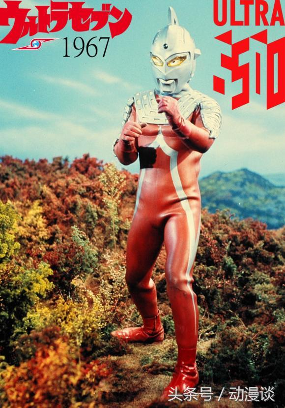
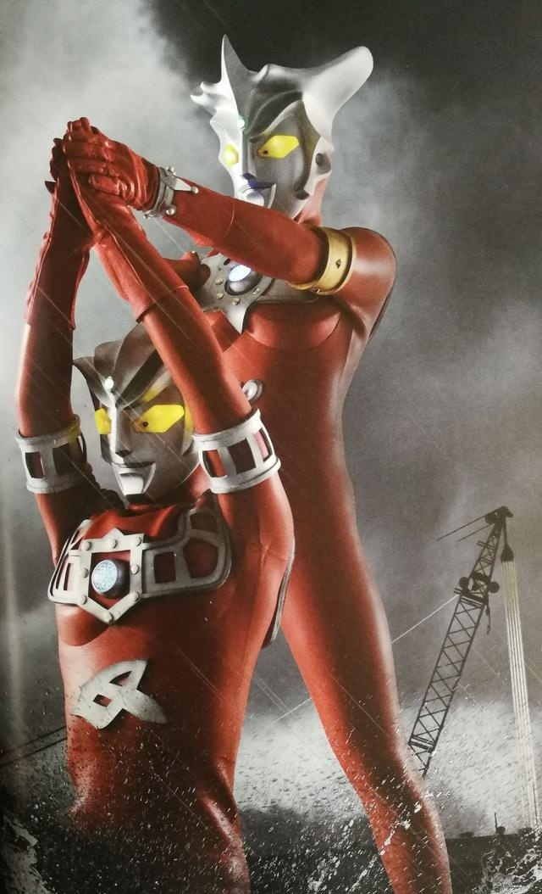

历代奥特曼介绍初代 奥特曼系列特摄剧第一个登场的奥特曼，来自于M78星云的宇宙人，为追踪逃亡的宇宙怪兽百慕拉而来到地球，因伤害了地球人早田进而感到内疚，因此奥特曼决心与早田合二为一，共同为保卫地球的和平而战。在与杰顿战斗中败给杰顿，后来被佐菲带回M78星云，现为宇宙警备队银河系局长。 佐菲 奥特兄弟的大哥，也是奥特兄弟和宇宙警备队的领导者。昵称“炎头队长”，他的名字“Zoffy”源于“Sophia（索菲亚）”----古代神话中的智慧女神。因为是男性所以改作“Zoffy”。在初代最终回首次登场，接应初代并将他带回M78星云。不经常出现，仅仅是当在地球的战士们陷入困境时，才会前来助战，他通常留守在宇宙警备队总部。 赛文 原M78星云340号恒星观测员，为制作轨道图而来到了地球，化身为人类模样，决心留在地球作战。 
杰克 是奥特道场的教练，在回到奥特之星后担任宇宙警备队地球课长，现为奥特之星支部长。 艾斯 在奥特兄弟中排行第五，是佐菲从战争中救回来的孤儿。在地球上艾斯打败了宿敌亚波人，并把亚波人的最强王牌超兽强博王击杀后返回了光之国。现为七大星云支部的支部长之一。 奥特之父 光之国实际掌权者，宇宙警备队大队长，别名是Ken，出生M78星云光之国，能压倒令奥特兄弟陷入苦战的对手。 奥特之母 银河银十字军队长，同时也是奥特之父的妻子以及泰罗·奥特曼的母亲。本名：玛丽·奥特曼（ウルトラウーマン マリー、Ultraman Marie）。 奥特之父&奥特之母 泰罗 奥特之父与奥特之母的亲生儿子，现为宇宙警备队总教官。泰罗的格斗能力非常出色，光线能力也非常强大，综合实力是奥特兄弟中最强大的。 雷欧 来自于L77星云，起初的雷欧并不强大，但是在赛文的严厉的指导下逐渐成长成为一名奥特战士，战胜了一个又一个宇宙侵略者，是一名擅长宇宙拳法的高手，亦是赛文之子赛罗的师傅，是昭和奥中的格斗王。 阿斯特拉 雷欧的亲弟弟，同样来自L77星云。 
雷欧/阿斯特拉 奥特之王 居住在国王星的长者，光之国的王者。和雷杰多、诺亚、赛迦并称神秘四奥。被光之国的奥特战士称作“王”。本名“皮克”。 爱迪 宇宙警备队成员,光之国负能量调查员，奥特曼兄弟第九位成员。爱迪的战斗方式以杂技般的跳跃和丰富多彩的光线技能为特征，爱迪是昭和系奥特曼中唯一没有战败记录的奥特曼，是昭和系奥特曼中的的“全能王”。 尤莉安 光之国的公主。 迪迦 超古代时期就出现在地球的巨人，并非地球出生的奥特曼。迪迦本来是和三个黑暗巨人一起的邪恶奥特曼，后来因超古代时期的地球警备队队长幽玲劝说下弃暗投明， 获得了光之力量，并打倒本是同伴的三个黑暗巨人，吸收他们的能力，最终并成为光之巨人迪迦。 戴拿 为了拯救将要面临新领域时代的地球和人类，在宇宙中出现的新的光之巨人，和Super GUTS的飞鸟信一体化，借助闪光剑来变身。有着和迪迦相似的身姿，以及同样的形态变化能力，但是和迪迦等三千万年前的巨人关系不明。 盖亚 是高山我梦用被地球的大地授予的红色的光，变身而成的大地般赤色的巨人盖亚。 阿古茹 盖亚的挚友，代表着大海力量的蓝色巨人。 高斯 从宇宙来的神秘巨人，期盼和平、不喜欢相互争斗，是一位主张不弄伤对方并建立友好关系的但面对凶恶卑劣的敌人果断地与其战斗的慈爱战士。 杰斯提斯 初次登场于高斯（COSMOS）的第二部剧场版《蓝色星球》，圣德罗斯袭击地球，高斯被他压制、陷入危机的时候，杰斯提斯出现，他给高斯补充能量之后，和高斯联手，一起打败了这个强大的敌人——圣德罗斯。 雷杰多 传说中的巨人，和赛迦、诺亚、奥特之王并称神秘四奥。 奈克斯特 诺亚因因耗尽能量所变的形态，同时是奈克赛斯的前身，首次登场于电影《奈克斯特·奥特曼（ULTRAMAN）》，代号为THE NEXT。而变身为THE NEXT的是真木舜一。 奈克赛斯 是诺亚在光之国封印了黑暗扎基后退化成的形态，在地球消灭了黑暗扎基后消失。 诺亚 存在于传说中的奥特曼，从太古时代起便守护着宇宙的传说中的光之救世主，是奈克斯特、奈克赛斯的最终形态，是能超越时空的极其强大的巨人。 麦克斯 来自M78星云的光之巨人，肩负着星球文明监视员的身份来到地球。在目睹了即使牺牲自己也要为保护他人而战的青年东马快斗的壮举后，深受其感动，与之合二为一，为保卫地球而战。 杰诺 剧中来支援麦克斯消灭杰顿，被称为平成的佐菲。 梦比优斯 是距离爱迪离开地球时隔25年后，出现在地球的年轻的奥特战士。宇宙警备队的新人，在打败安培拉星人后，成为奥特兄弟的一员。 希卡利 本隶属于M78星云光之国中的和“宇宙警备队”、“银十字军”并列的宇宙科学技术局。因在调查研究时立下了汗马功劳，后来被佐菲提拔为“宇宙警备队”的队员。与梦比优斯同时期在地球出动。 梦比优斯&希卡利 赛罗 赛文的儿子，光之国的新生代奥特战士。隶属于宇宙警备队，创建了终极赛罗警备队，是M78星云光之国年轻又强大的奥特战士。  贝利亚 原光之国诞生的奥特战士，过去在奥特大战争中表现出色， 是奥特之父的战友。后被究极生命体雷布朗多星人的灵魂附身后变成邪恶奥特曼。光之国悠久的历史中唯一一个堕入黑暗的奥特曼。 赛迦 是赛罗、高斯·奥特曼、戴拿三个性格不同的奥特曼为了地球的危机而相遇，从恐惧与绝望中抓住希望而诞生的奇迹的存在。赛迦与诺亚、雷杰多、奥特之王被称为神秘四奥。 银河 据说是来自未来的奥特曼，平时以人偶状态隐藏在银河火花里。当充满勇气的心与银河相呼应时，主人公礼堂光即与银河一体化，现出巨大化的身姿。自身也有意识，能脱离变身者的存在而活动。  维克特利 由地底世界“维克特利安”的青年翔超实体化的奥特曼。全身装备了以V字型为特征的水晶，胸部的彩色计时器亦呈V型。 艾克斯 由特搜队青年队员大空大地所持变身器X终端一体化的光之巨人。拥有明确的自我意识，平时将自身数据化寄存在X终端里，与大地一起并肩作战，为守护地球的和平而战斗。 欧布 其本体很久以前就以光环姿态隐藏在行星O-50的战士之巅山顶上，等待有资质的优秀战士获取欧布圣剑得到自己的力量。最终，一位名为凯的年轻战士成功获取欧布圣剑，并成为欧布的人间体。 捷德 反派贝利亚的儿子，也是赛罗的伙伴，在地球上化身为名为朝仓陆的少年。 |
Welcome to